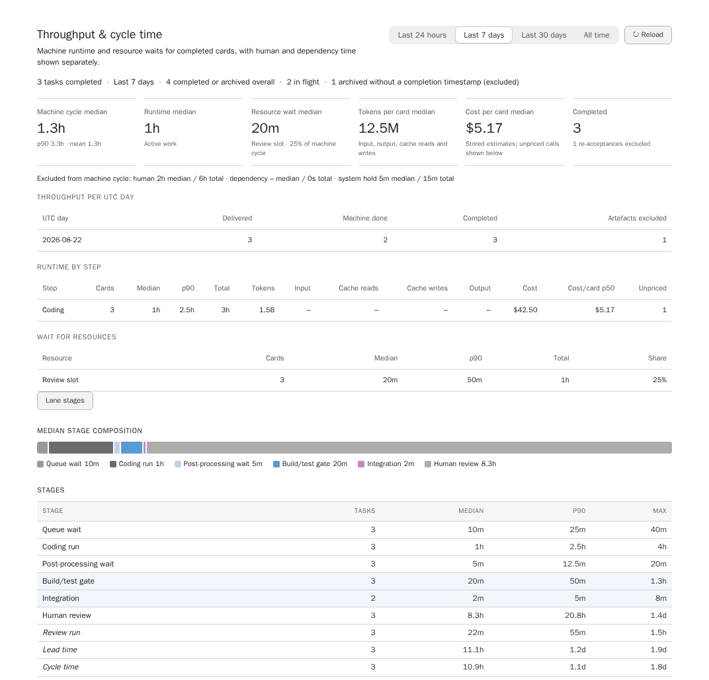
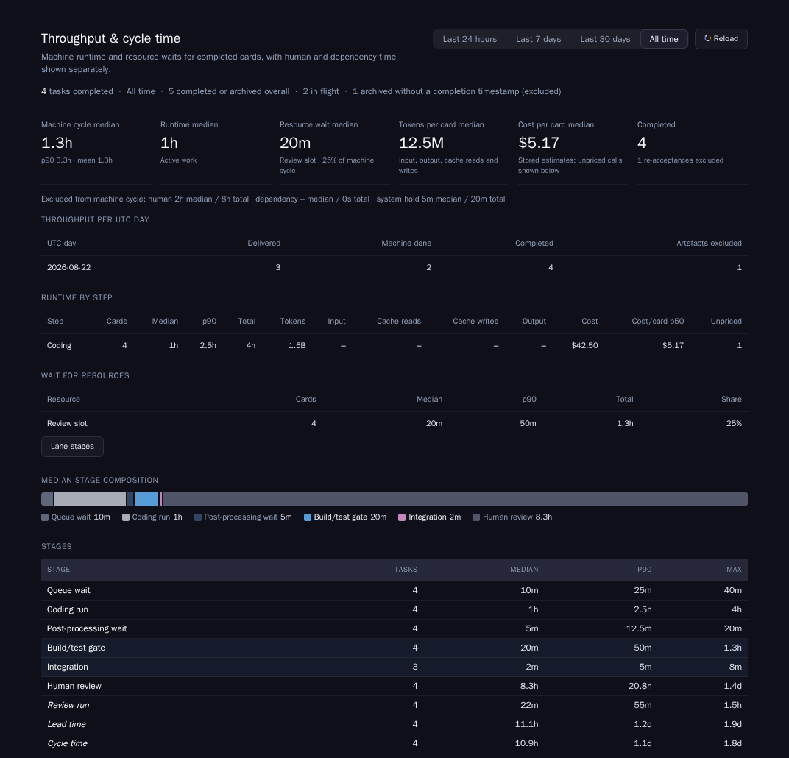
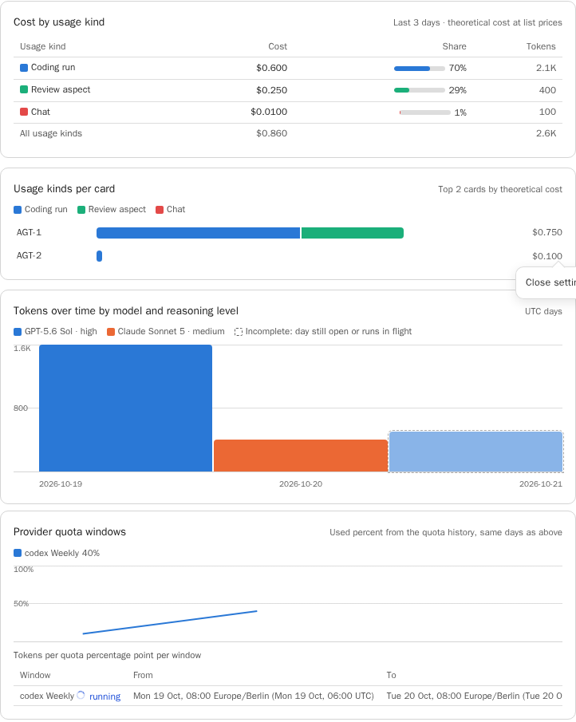
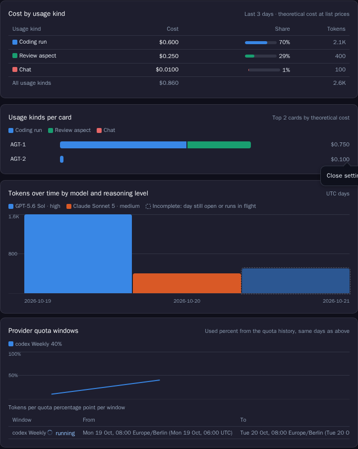

A world in the Studio where cards walk through Ready, Coding, Review and Integration. The owner watches the real pipeline in it, then forks it into a what-if run to see where the bottleneck is, what a strategy or a wave costs in tokens and quota, and what a single card went through. The simulation uses no model tokens.
Pattern conceptStatus decision-pendingPhase decision-readySource card AGT-4028As of 24 November 2026, develop 6ad4f5f0eBuilds ondocs/dispatcher-personas/, docs/red-test-isolation/, docs/header-usage-cockpit/
01 Scope
On 24 November 2026 the owner pointed to an interactive simulation website as an inspiration: "I want to simulate and show card throughput in different phases like this. I want to show token usage simulated here. [...] Here I want to understand bottlenecks, development, costs and so on." This Dossier takes the principle of that site, a world you watch move and then play with, and applies it to the Agent Studio card pipeline. It changes no product code.
The simulator is a project hub section, "Pipeline world", next to "Throughput & cycle time". It opens on a live isometric world of the project: blue figures are cards in their first pass, orange figures are rework. The bottleneck place is highlighted, and one sentence names it. A what-if run forks this state, takes a dated parameter set measured from the installation plus the owner's changes, and plays forward under a strategy (strict, fast as built, fast as intended, with or without a dispatcher). Charts under the world show cards per hour, queues per phase, a bottleneck band, raw tokens and USD split into first pass and rework, lead time, and the weekly quota window. One card can be followed round by round, and two runs can be compared. The engine is a per-card discrete-event model in the backend. It applies the decision library's own policies, so a simulated strategy is the real one. The browser only plays back the event log. Every parameter set is checked by replaying recorded days, and the fit is shown.
03 Questions
The owner asks
The simulator answers with
Where is the bottleneck today, and what would move it?
The highlighted place and the bottleneck band; a what-if with one changed setting
What does a wave of 50 cards cost in tokens and USD under each strategy?
A wave preset run under each strategy, compared side by side
How many points of the weekly window does a plan use, and by which day?
The window chart: used percent now, the plan's projection and the reset
What happens to lead time if reviews get two more slots?
A what-if with 9 review slots against live
How many rounds does a strategy cause, and where does the rework come from?
Rounds per card and USD split by loop: conflict, red gate, stale verdict, red after integration
Why did this card take so long?
Following one card: its rounds, waits and reasons
What does a dispatcher strategy gain and cost?
A replay of a recorded wave with the strategy plugged in
What would 22 and 23 November have looked like with quarantine instead of the project-wide fallback?
A replay of those days with RedTestTriagePolicy
Can I trust the numbers?
The replay fit of the current parameter set, per recorded day
04 First answers
A first-order wave model (evidence/wave_model.py, standard library only) runs the 17 November wave of 57 cards through the four strategies with the measured values. Each figure is the mean of 200 seeded runs. The conflict share was fitted to the 21 of 57 cards that needed a develop sync on that day. The dispatcher row uses the fast-as-intended gate and a perfect forecast at the level of a series. Full output: evidence/output-6ad4f5f0e.txt; commands in the Dossier README.
Strategy
Cards/h
Drained
Gate wait p50
Synced
USD (rework)
Points
Bottleneck (busy)
strict
3.29
18.3 h
167 min
20.7
977 (12.5 %)
54.2
Integration (96 %)
fast as built
1.34
42.7 h
531 min
22.0
981 (12.7 %)
54.5
Integration (98 %)
fast as intended
6.64
8.6 h
6 min
16.0
923 (7.3 %)
51.3
Coding (82 %)
with a dispatcher
2.13
26.9 h
5 min
1.1
870 (1.8 %)
48.3
Coding (24 %), held back by the dispatch rule
Bottleneck. Under strict and fast as built the gate is busy almost all the time, and review is busy 5 to 14 %. Two more review slots change nothing in this wave. They help only when reviews run the full suite (60 to 75 minutes): then, under fast as intended, 9 slots instead of 7 raise throughput from 2.96 to 3.58 cards an hour.
Conflicts do not vanish with speed. Integrating at once cuts the gate wait from 167 to 6 minutes, but the number of cards needing a sync falls only from 20.7 to 16.0: more merges land while a card is coding. Speed removes the repeat rounds and stale reviews. Only fewer overlapping cards running at the same time removes the first conflict.
Cost of a wave. One wave of 57 cards uses about 48 to 55 points of the weekly Claude window, about one point per card, mostly first runs. For 50 cards: 42 to 47 points.
What the model misses. It gives 12.5 % rework against the measured 40 %. The p95 gate wait is 303 against 598 minutes. The calibration card and the replay check (SIM-5) must close both gaps before the simulator's answers are trusted (see Check against reality).
05 Alternatives
A · Forecast charts in the throughput view
Add queue formulas and a forecast line to "Throughput & cycle time". This is cheap and has no world. It cannot show loops compounding, one card's rounds, or a strategy's rules, because averages hide them. It misses the owner's principle of watching and then playing.
B · A world in the Studio on the real rules (recommended)
A per-card discrete-event engine in the backend that calls the decision library's policies. A dated parameter set is measured nightly and checked by replay. A live world fed by real events, a what-if fork, charts, card following and comparison. This is more work, but the numbers are those of the installation and the rules are the shipped ones.
C · A stand-alone simulator in the browser
Grow one of the research prototypes into a separate page with its own engine in the browser, fed with exported parameters. It is the fastest to show, but its rules would be a second copy outside the decision library, it has no live mode, and it drifts from the product with every policy change.
06 Recommendation
Recommended default
Adopt B. Start with the recorded facts and the event schema (SIM-1), because the live world (SIM-3) and the engine (SIM-2) both need them and can then be built in parallel. Only open what-if mode to the owner (SIM-6) once the parameter set exists (SIM-4). Use its answers for decisions only after the replay check (SIM-5) fits 17, 18 and 23 November.
Why. The owner's questions are about loops and rules, and averages hide both. The live mode is useful from the first day without any model. The replay check makes the what-if answers trustworthy, or shows where they are not.
What it reuses. Lane events, pipeline execution records, the token analysis kinds and prices, quota snapshots, the batch gate ledger, the conflict record, the decision library, the Studio tokens and lane tones.
Risk. A plausible but wrong simulation steers decisions. Against that: parameter sets are dated, assumptions are marked, the replay fit is shown next to every answer, and a set that does not fit is never used silently.
07 Evidence
Observed facts are read from code at develop 6ad4f5f0e or from the existing views. The wave model's results are inferences. The proposals are labelled as such. The published evidence inventory names every capture, its provenance, dimensions and SHA-256. These adjacent assets are part of this repository Dossier and are also included in the task's collected review bundle.
The proposed token timeline specifies raw token units, first-pass and rework splits, phase and model filters, time attribution and reconciliation independently of USD. Its diagram is a proposal; the captures below show existing product surfaces.
Light

Completed cards only
Dark

Evidence. The captured "Throughput & cycle time" panel shows medians, one row per UTC day and a stage table for completed cards. This captured panel has no within-day time axis, queue timeline or simulation control. The simulator adds those, and it reads the same stage boundaries for its replay check.Light: captured on develop 6ad4f5f0e by the unchanged frontend/e2e/project/project-cycle-time-panel.spec.ts (Last 7 days); its /api/projects/{p}/cycle-time response is the spec's route mock, so the data is mocked and the rendering is real. Cropped to the content panel.Dark: captured in the same run (All time), same mock, same crop.
Light

Recorded spend per day
Dark

Evidence. The captured token analysis shows cost by usage kind and card, a tokens-over-time chart by model per UTC day, and a provider quota used-percent line. These panels show recorded fixture usage and an incomplete-day marker; no simulated strategy or plan projection is visible. The simulator takes its kinds and prices and projects them forward.Light: captured on develop 6ad4f5f0e by the unchanged frontend/e2e/workspace/token-analysis.spec.ts at 1280 px, with the analysis response pinned to token-analysis.fixtures.ts. Cropped to the four panels below the filters.Dark: captured in the same run, same fixture and crop.
Each decision has a recommended option. The slices use the recommendation unless the owner records another choice.
Decision
Options
Recommended
PS-D1 Where the engine runs
A In the browser, its own TypeScript rules; B In the backend, a .NET engine that calls the decision library's policies; the browser plays back the event log; C Both, a browser estimate plus the backend engine
B. A simulated strategy must be the shipped strategy; rules live only in orchestration-decisions/.
PS-D2 Model granularity
A Queue formulas on averages; B Per-card discrete events, seeded, 200 runs for a range; C Trace replay only
B. Loops compound per card; averages hide the 7-round card.
PS-D3 Where it lives
A Project hub section Pipeline world next to Throughput & cycle time; B A tab inside Throughput & cycle time; C A workspace-level route for all projects
A. Gate, window, strategy and conflicts are per project; a full-bleed world needs its own section.
PS-D4 Source of the live mode
A Poll projections every 30 s; B Snapshot on open, then events over /hubs/jobs; C No live mode at first
B. The events exist; a picture that lags 30 s cannot show a card moving.
PS-D5 Telling the modes apart
A A mode pill only; B Ground, figure style, mode pill with change chips, and a forked timeline together; C Two separate pages
B. A simulated queue must never be read as a real one, even in a screenshot.
PS-D6 Visual language
A Its palette and Archivo as a separate simulator theme; B Its principle with Studio tokens, lane tones and Inter at weight 800 with system fallback; C As B, plus a bundled Archivo for the headline only
B. One visual system, both themes, no font from another host; C stays open if the headline looks weak.
PS-D7 Rendering of the world
A Inline SVG; B Canvas 2D for the world, inline SVG for charts; C A WebGL library
B. Hundreds of moving figures; charts stay in the existing SVG pattern; no new dependency.
PS-D8 Parameter refresh
A By hand; B Nightly dated set from a 7-day window, owner changes as a named layer, slots and quota read live at the fork; C Continuously
B. Reproducible comparisons need sets that never change once written.
PS-D9 When the model is trusted
A Owner judgement; B Replay of 17, 18 and 23 November within 15 % throughput, 25 % median gate wait, 20 % USD; nightly fit shown; C No check
B. The first model misses the rework share by a factor of three; only a replay shows that.
PS-D10 Model tokens
A No; statements and bottleneck readings are computed; B A persona narration of a run on the persona budget; C Model-based parameter estimation
A. The simulation is arithmetic over records; a narration can be added later as a persona action.
PS-D11 Judging dispatcher strategies
A In the separate DS-4 harness; B On this engine through DispatchPlanPolicy; DS-4 uses it; C Not replayed
B. Two simulators of the same pipeline would disagree; one engine serves both.
PS-D12 Use of the research prototypes
A Port the better prototype; B Take findings from both into SIM-3, SIM-6 and SIM-8; engine from SIM-2; C Ship a prototype as is
B. Prototype rules would be a copy outside the decision library; their visual findings are the value.
09 Slices
Nine slices in two lanes. The backend lane is SIM-1, 2, 4, 5 and 7. The frontend lane is SIM-3, 6, 8 and 9. Slices in the same lane never run at the same time, and the dependsOn edges in workbench.json enforce this. The two lanes run in parallel.